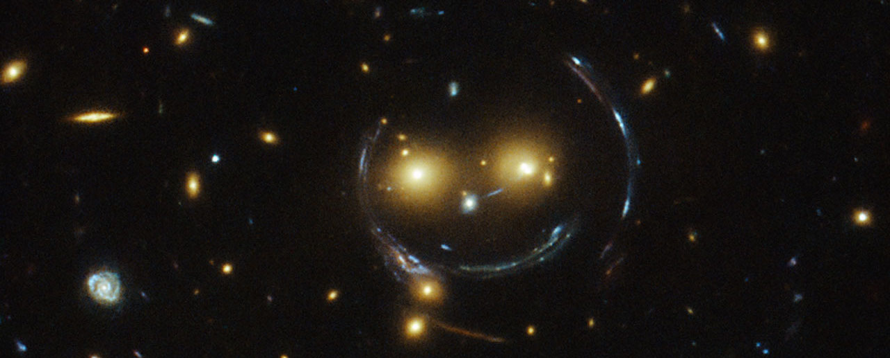
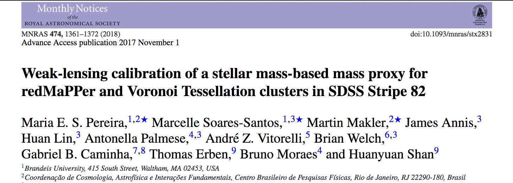
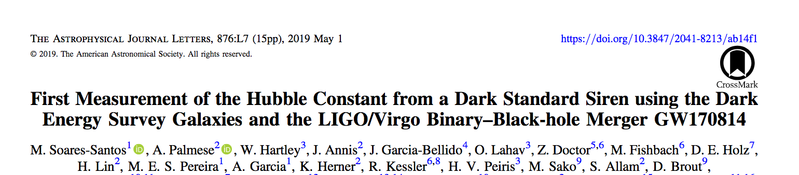
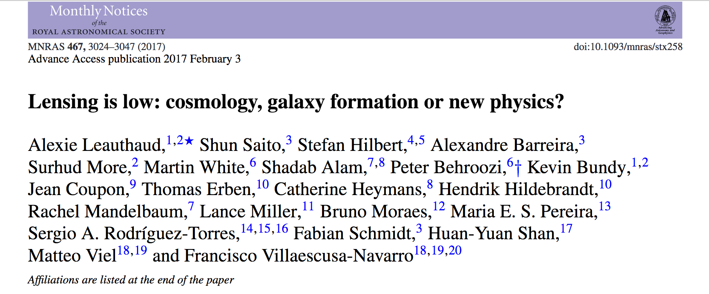

About Me
 A smiling lens. Credit: NASA & ESA.
Postdoctoral researcher at Brandeis University. Interested in Observational Cosmology with gravitational lensing, galaxy clusters and gravitational waves.
Education:
- Ph.D in Physics, Brazilian Center for Research in Physics (CBPF), 2017
- B.E. in Physics, Rio de Janeiro State University (UERJ), 2015
- M.S. in Physics, CBPF, 2012
- B.S. in Physics, UERJ, 2009
Publications: ORCID iD
Research
A new mass proxy for optical galaxy clusters
In this project, we propose a new mass proxy for galaxy clusters based on the stellar masses,
named μ★.
Besides being physically motivated, μ★ is independent of the history's formation of the red-sequence and has the potential
to better characterize the mass of optical galaxy clusters at high redshifts (z>1).

See also: Stellar mass as a galaxy cluster mass proxy: application to the Dark Energy Survey redMaPPer clusters
Using binary black hole mergers to estimate H0
We performed the first measurement of H0 using the gravitational wave (GW) signals
from a binary black hole (BBH) merger in combination with the information from galaxies. This technique is interesting because it does not rely on finding the
electromagnetic counterpart of the GW events, which is very rare. The BBH events are frequent, and therefore, in a few years, we will have enough statistics
to make this methodology achieve more precise estimates for H0.

The CFHT Stripe 82 Survey
I am member and builder of the CFTH Stripe 82 survey (CS82) collaboration. CS82 is an i-band survey in 170 deg2 of
the Sloan Digital Sky Survey (SDSS) Stripe 82 that was specially designed for weak lensing measurements. It has an excellent image quality with mean seeing∼0.6"
and completeness magnitude of ∼23.5 in the i-band. The survey detected around 17 million objects. The collaboration has several interesting results. The most
cited is the result that shows that standard models of the galaxy-halo connection adjusted to reproduce the clustering of the CMASS sample predict a galaxy-galaxy
lensing signal that is 20-40% higher than the one we observed in our data.

Other highlights:
Morpho-z: improving photometric redshifts with galaxy morphology
On mass concentrations and magnitude gaps of galaxy systems in the CS82 survey
Probing galaxy assembly bias with LRG weak lensing observations
Weak-lensing analysis of galaxy pairs using CS82 data
Contact
Email: mariaeli@brandeis.edu
Address: Brandeis University
415 South Street, MS 057
Waltham, MA - 02453